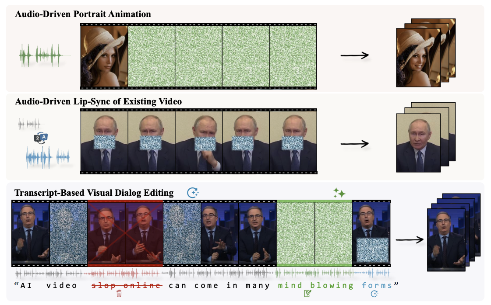

|
Sam Nhut Nguyen Machine Learning Deep Learning Computer Vision Flow Matching Diffusion I'm a Founding Member at Pipio AI, focused on multi-modal video synthesis and audio-driven video editing. Previously at Captions AI, where I led development of Lipdub (video dubbing engine) and contributed to Mirage. Co-founded dizim, a virtual presenter platform (Top 10 at Techfest 2022). 📍 Ho Chi Minh City, Vietnam |
|
What I've been working on.
Lip-sync, video dubbing, and talking head generation — from research to production at scale.
Projects8+ years building production generative AI systems for lip-sync, text-to-speech, and virtual presenters serving hundreds of thousands of users. |
|

|
EditYourself: Audio-Driven Generation and Manipulation of Talking Head Videos
NEW
John Flynn, Wolfgang Paier, Dimitar Dinev, Sam Nhut Nguyen, Hayk Poghosyan, Manuel Toribio, Sandipan Banerjee, Guy Gafni ArXiv 2026 project page · arXiv EditYourself is a diffusion-based video editing model for talking heads, enabling transcript-driven lip-syncing, insertion, removal and retiming of speech while preserving identity and visual fidelity. |
 Captions AI · Senior Member of Technical Staff
Captions AI · Senior Member of Technical Staff
AI-powered video creation studio enabling users to generate cinematic-quality videos from text prompts with advanced motion and style control.
Captions AI · Senior Member of Technical Staff
Video dubbing engine that translates and lip-syncs videos into 28+ languages. Led development of the core lip-synchronization pipeline.
Voice cloning technology achieving best local Vietnamese voice quality. Reached 100k+ users within months of launch.
Virtual presenter platform serving 200k+ users. Top 10 at Techfest 2022. Generates AI-driven talking head videos from text and slides.
First AI-powered online education platform in Vietnam. OnliCV connects your professional network. Led 8-person ML team building the core AI features.
Computer vision for retail automation. AI-powered shelf monitoring and product recognition that reduced manual review by 70%. Silver Winner SAP SME SEEDx 2020.
Facial recognition system for e-KYC and access control across Banking, Retail, and Security sectors. Real-time face detection and verification pipeline.
OCR engine specialized for complex Japanese Kanji/Kana character recognition. Built for document digitization workflows serving Japanese enterprise clients.
Open SourceMy open-source work focuses on flow matching, audio/video generation, and lip synchronization. Based on my thesis research on talking face generation with GANs. |

High-resolution Wav2Lip implementation at 288x288 with complete training pipeline. Based on my thesis "Talking Face via Audio Driven".


Unofficial implementation of Split Mean Flow from ByteDance. One-step generative modeling using flow matching techniques for efficient sampling.


Text-to-speech with learnable audio encoder without alignment with transcript reference. Novel approach to speech synthesis using learned representations.


Variational Autoencoder variant of Descript Audio Codec for high-fidelity audio compression. Enables efficient audio encoding for generative models.


Experience |
| 💼 Work |
|
| 🎓 Education |
|
| 🏆 Honors |
|
| 🛠️ Skills | Large Scale Training, GANs, VAEs, Flow Matching, Diffusion, LLM, Kubernetes, Azure, PyTorch |
 BSc in Mathematics and Computer Science - VNU-HCMUS University of Science (2015-2019)
BSc in Mathematics and Computer Science - VNU-HCMUS University of Science (2015-2019)
ImpactEngineering contributions that directly supported fundraising, product launches, and business milestones. |
Joined as Founding Member, leading research on EditYourself and multi-modal video synthesis. Building core product demos and technical vision to support the next fundraising milestone.
Captions AI — Series C
Built core demos and technical presentations showcasing Lipdub and Mirage capabilities for the fundraising process. Led by Index Ventures, with Kleiner Perkins, a16z, and Sequoia returning.
Captions AI — Series B
Developed product demos and pitch materials for the Lipdub video dubbing engine. Led by Kleiner Perkins, with a16z and Sequoia participating.
Led ML team building AI-powered e-learning features including virtual lecturers and voice cloning for the Onlinica platform, supporting the $20M fundraise for VTC Academy's digital education ecosystem.
Co-founded and built the core AI engine, demos, and pitch video for Techfest Vietnam 2022 (Top 10 nationally). Secured pre-seed funding from Antler, a global early-stage VC.
Advised on voice cloning technology and product development. Ausynclab was selected into the Microsoft for Startups program, reaching 50K+ users within months of launch.
|
Website template from Jon Barron. © 2026 Sam Nhut Nguyen · All rights reserved |